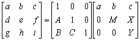
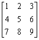
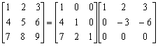

三階矩陣LU分解
程式編寫日期: 2007年10月21日
程式可以將個三階矩陣分解為一個三階下三角矩陣及一個三階上三角矩陣
分解的形式:

註: 輸入數據後，程式會先計算三階下三角矩陣 (A、B及C) 再計算三階上三角矩陣(M、X及Y)
程式 (87 bytes)
?→B: ?→Y: ?→D: ?→A: A┘B→A: ?→M:
YAM-: ?→X: ?→C: C┘B→B: ?→C:
(C - YB)┘M→C: ?→Y: A◢ B◢ C◢ M◢
X - AD→X◢ Y - BD - XC→Y
例題: 求以下三階矩陣的LU分解

按 Prog 1 再按 1 EXE 2 EXE 3 EXE 4 EXE 5 EXE 6 EXE 7 EXE 8 EXE 9
EXE (顯示4) EXE (顯示7) EXE (顯示2)
EXE (顯示-3) EXE (顯示-6) EXE (顯示0)
因此

返回 CASIO fx-50FH、fx-3650P II、fx-50FH II及fx-50F PLUS 程式集